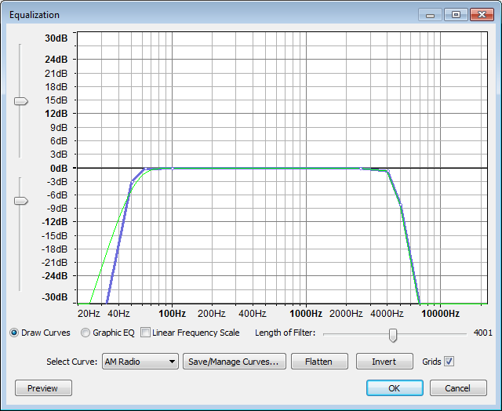
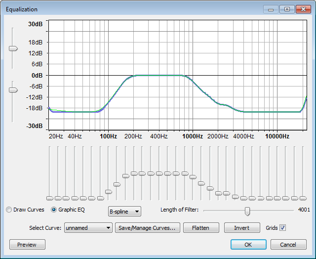
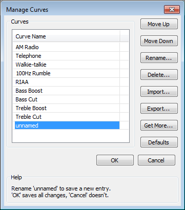

Equalization
From Audacity Manual
- Accessed by:
- 
Graph Scale and Sliders
- Vertical Scale: This scale is in dB and shows the amount of gain (amplification above 0 dB or attenuation below 0 dB) that will be applied to the audio at any given frequency.
- Horizontal Scale: This shows the frequencies in Hz to which volume adjustments will be applied. Dragging the Equalization window wider displays some additional points on the scale and makes it easier to plot the graph accurately.
- Vertical scale sliders: By default the vertical scale reads from + 30 dB to - 30 dB, but these two sliders to left of the scale let you adjust the upper and lower dB values so as to change the visible range on the graph. Note that moving either slider changes the horizontal position of the 0 dB line. Reducing the visible range lets you make a finer adjustment to how loud the frequencies sound, but the changes will be more subtle because the volume adjustment will be less.
Draw Curves
- Equalization Curves and Control Points: If you look closely at the curve in the image above, you'll see it's composed of a blue curve joining together a number of white circles, and a green curve which follows the general shape of the blue curve. The white circles are called "control points". When in "Draw Curves" mode, the blue curve is drawn by either clicking in the graph at any position, or clicking on the blue curve and dragging it to a position. Doing either creates a control point at that position, then creating further control points draws the curve. To remove a control point, drag it outside the graph.
The green curve is the one that Audacity actually uses to perform the effect, taking into account the limitations of the equalization algorithm. The green curve usually follows the blue curve closely, but will be forced to a smoother path if there are sudden changes in amplitude over a small frequency range. - Linear Frequency Scale: When this box is unchecked, the horizontal frequency scale is logarithmic, giving more detail at the lower frequencies. This corresponds roughly to our greater sensitivity to lower frequencies. When checked, the frequency scale is linear, displaying equal frequency ranges for each unit of the scale. This can be useful for precision adjustments at high frequencies. This control is available only in "Draw Curves" mode.
- If the line in the graph is not already horizontal at the 0 dB position, click "Flat" (see below).
- Click at the point that is opposite both -10 dB on the vertical scale and 100 Hz on the horizontal scale.
- Click at the point that is opposite both +10 dB on the vertical scale and 5000 Hz on the horizontal scale.
- Create extra control points if desired between 100 Hz and 5000 Hz to modify whether particular frequencies between those two levels should be reduced or increased in volume.
| No account is taken of whether your equalization curve will result in the selection being amplified beyond the clipping (distortion) level. If your curve amplifies any frequencies, especially the lower frequencies which are normally the loudest, the track(s) first to -3 dB or lower. If necessary you can always the Equalization, Normalize again to a lower level, then re-apply Equalization. |
Graphic EQ
- 
- Frequency Sliders: In "Graphic EQ" mode, the equalization curve is drawn by manipulating a set of sliders. Each slider adjusts the gain of a specific range of frequencies, the gain being maximized at (centered on) the frequency stated on the slider. Click and drag the slider up or down to increase or decrease the volume by a maximum of 20 dB. You can TAB between each slider. You can get to an exact slider value but the method depends to some extent on your operating system. Try:
- Clicking above or below the slider to increment it up or down by a fixed value in whole dB
- Clicking above or below the slider to jump to a nearby whole dB value
- Using the arrow keys on the keyboard to increment by 1 dB
- Holding down SHIFT then either dragging the slider handle or using the arrow keys to increment by 0.1 dB.
Equalization settings and presets
- Draw Curves: Selecting this radio button gives you the "Draw Curves" mode, in which the equalization curve is drawn by manipulating control points.
- Graphic EQ: This button switches to the simpler "Graphic EQ" mode, in which the equalization curve is drawn by adjusting the frequency sliders.
- Length of filter: How many samples of audio Audacity processes in each analysis step. Generally, it's best left at the default value of 4001. If the green curve Audacity uses to perform the effect is very different from the blue curve you created, try increasing the length of the filter. Higher settings will process the audio in a greater number of narrow frequency bands, but may introduce ringing artifacts at very high settings.
- At high sample rates the actual time represented by a given number of samples will be less and the frequency bands will be broader so as to cover the increased frequency range. As a result, the green curve will fit to the blue line less closely at any given "Length of filter" than for lower sample rates.
- A shorter filter length may sometimes be preferable. It will take less time to process the effect, and the smoother curve produced may actually sound better, unless you are modifying very low frequencies.
- Select curve: Click the dropdown triangle to select from a list of preset equalizations. These are either your own saved presets (see "Save/Manage Curves" below) or built-in presets, mostly playback equalizations for gramophone records. These could be used to equalize an LP or 78 rpm disk recorded into Audacity without equalization. A curve will display as a "custom" curve if it is not yet saved as a preset, or if it is a modified preset. There will also be the following instances where curves can only be matched approximately, so will display as "custom":
- In "Graphic EQ" mode, built-in presets will display as "custom" because they were built using the differently calculated "Draw curves" mode.
- Your own saved presets will always display with their saved name if loaded in the same mode you saved them in. In "Graphic EQ" mode, only presets saved in that mode will display with their saved name. In "Draw Curves" mode, a curve created in "Graphic EQ" mode can be displayed as its saved name if loaded from within "Draw Curves". If that curve is loaded in "Graphic EQ" mode and then switched to "Draw Curves", it will display as "custom".
- Any curve in either mode will display as "custom" if there are points in the curve that are outside the range of the Horizontal Scale. For example, if you have a point at 10 Hz in a curve saved in linear view (where the scale starts at 0 Hz) then switch to logarithmic view (where the scale starts at 20 Hz), the curve will switch to "custom". In that case Audacity will put a point in at 20 Hz at the dB level you wanted at 10 Hz.
- Save/Manage Curves: This brings up the "Manage Curves" dialog. See below for details.
- Flatten: A quick way to set a "level response curve". This means the curve on the graph is drawn from left to right at 0 dB on the vertical scale, so that no frequencies will have their volume level modified.
- Invert: Turns the current curve in the window upside down, changing positive gains at a particular frequency into negative, and vice versa. To negate incorrect RIAA equalization of a 78 rpm record that was recorded with a modern turntable, you can apply the already supplied "Inverse RIAA" curve in the "Select Curve" dropdown, without using the "Invert" button.
Limitations
To process Equalization, all tracks in the project must have the same sample rate. To change the sample rate of a track without affecting speed or pitch, use .
Manage Curves
- 
- Move Up: Move the selected preset up in the list.
- Move Down: Move the selected preset down in the list.
- Rename: Give the preset a new name.
- Delete: Remove the preset from the list.
- Import: Import new presets from an XML file, adding them to the current list.
- Export: Export the curves selected in "Manage Curves" to a new XML file. Be sure to add ".xml" to the end of the file name on Mac and Linux. You could use this to export your custom EQ curves to share them on the EQ Curves Download page on the Audacity wiki.
- Get More: Clicking this button takes you to the EQ Curves Download page on the Audacity wiki, where you can download the latest default curve set, or other curve sets created by users for specific purposes such as applying the proper equalization to 78 rpm records.
- Defaults: Restore the list to the default setting. Warning: you will lose any custom presets you have created.
- Cancel: Close the dialog without making any changes.
- OK: Close the dialog and accept the changes.
Examples:
To save a new preset, modify the curve then:
- Click "Save/Manage Curves..." ("unnamed" will already be selected)
- Click the "Rename" button
- Give the new preset a name not already in the "Curve Name" list
- Click the "OK" button.
To modify and save an existing preset, save in the same way by renaming the resulting "unnamed" curve as the original name:
- Click "Save/Manage Curves..." ("unnamed" will already be selected)
- Click the "Rename" button
- Type the original name of the curve exactly as in the "Curve Name" list
- When the "Curve exists" prompt appears, choose "Yes" to overwrite the curve
- Click the "OK" button.
The updated curve for the preset will still show as "unnamed" in the "Select Curve" box but is identical to the curve obtainable by selecting the name of the preset.
- the last "unnamed" curve visible on the graph (the save is made whenever you press "OK" in Equalization)
- all the named presets.